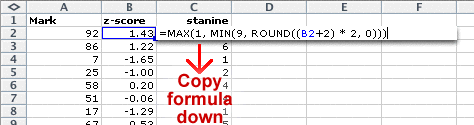

Translating data into stanines
A z-score provides a good measure of a student's performance in relation to the mean performance of the class. However many people find a z-score difficult to interpret. Sometimes the concept of a z-score is therefore simplified by transforming it into an integer value between 1 and 9 — a stanine.
The table below shows how z-scores are mapped into z-scores. The stanines 2 to 8 each correspond to a range of 0.5 z-scores.
| Z-score | Stanine | Percentage in normal population |
|---|---|---|
| Under -1.75 | 1 | 4 |
| -1.75 to -1.25 | 2 | 7 |
| -1.25 to -0.75 | 3 | 12 |
| -0.75 to -0.25 | 4 | 17 |
| -0.25 to 0.25 | 5 | 20 |
| 0.25 to 0.75 | 6 | 17 |
| 0.75 to 1.25 | 7 | 12 |
| 1.25 to 1.75 | 8 | 7 |
| Over 1.75 | 9 | 4 |
If stanines are obtained from a normal distribution of marks, we can evaluate the percentage of marks that will fall into each stanine. These percentages are shown in the third column of the table above. For smaller sets of marks, these proportions will be only approximate, but can be used as a guideline for interpreting the stanines.
Note that very few students will get a stanine of 1 or 9. You might expect approximately 4% of each — say one in any class.
The jittered dot plot below shows the 20 maths test marks that were examined in the previous page.
The diagram has been shaded to illustrate how the z-scores correspond to stanines. Click on crosses to read off the z-scores and stanines for individual students.
Observe that most students have stanines between 2 and 8, the exception being Samantha who got a stanine of 9 for her reading and spelling tests.
Although stanines are in some ways simpler than z-scores, they have poorer 'resolution'.
For example, look at the spelling test above. Samantha and Kamini got marks that were only 1 different (70 and 69), but Samantha's z-score of 1.76 was translated to a stanine of 9 whereas Kamini's z-score of 1.67 was translated to a stanine of 8.
On the other hand, Katie and Tracy both got stanines of 7, but their raw marks were 5 different.
There are some benefits in using stanines for reporting marks to a layman, but it is usually better to use z-scores for your own analyses.
Stanines in Excel
Stanines can be obtained from the z-scores as follows.
